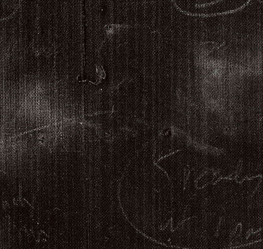
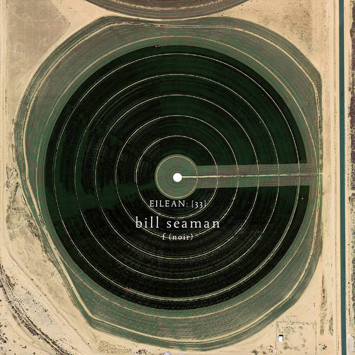
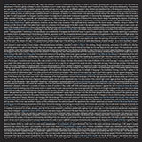

<!DOCTYPE html>
<html>

  <head>
  <meta charset="utf-8">
  <meta http-equiv="X-UA-Compatible" content="IE=edge">
  <meta name="viewport" content="width=device-width, initial-scale=1">

  <title>Bill Seaman</title>
  <meta name="description" content="Write an awesome description for your new site here. You can edit this line in _config.yml. It will appear in your document head meta (for Google search results) and in your feed.xml site description.
">


  <link rel="stylesheet" href="/css/app.css">
  <link href="https://fonts.googleapis.com/css?family=Ubuntu&display=swap" rel="stylesheet">
  <link rel="stylesheet" href="/css/superslides.css"/>
  <link rel="stylesheet" href="/css/slick-theme.css"/>
  <link rel="stylesheet" href="/css/slick.css"/>
  <link rel="stylesheet" href="/css/animate.css"/>
  <link rel="stylesheet" href="/css/linea-styles.css"/>
  <link rel="stylesheet" href="/css/linea-arrows-styles.css"/>
  <link rel="stylesheet" href="/css/font-awesome.css"/>
  <!--<link rel="stylesheet" href="/css/chivo.css"/>-->
  <link rel="stylesheet" href="/css/style.css"/>
  <link rel="stylesheet" href="/css/responsive.css"/>
  <link rel="stylesheet" href="/css/fonts.css" />
  <link href="https://fonts.googleapis.com/css?family=Ubuntu" rel="stylesheet">
  <link href="https://fonts.googleapis.com/css?family=Blinker&display=swap" rel="stylesheet">
  <link rel="stylesheet" href="https://stackpath.bootstrapcdn.com/bootstrap/4.4.1/css/bootstrap.min.css" integrity="sha384-Vkoo8x4CGsO3+Hhxv8T/Q5PaXtkKtu6ug5TOeNV6gBiFeWPGFN9MuhOf23Q9Ifjh" crossorigin="anonymous">
  <script src="https://aframe.io/releases/1.0.3/aframe.min.js"></script>

  <script src="/bower_components/modernizr/modernizr.js"></script>

  <link rel="canonical" href="http://localhost:4000/albums.html">
  <link rel="alternate" type="application/rss+xml" title="Bill Seaman" href="http://localhost:4000/feed.xml">
</head>
<body style="background: black; color: #FFFF"" scroll="no" style="overflow: hidden"></body>


  <body>

    <div class='contain-to-grid sticky transparent'>
  <nav class='top-bar' data-options='sticky_on: large' data-topbar=''>
    <ul class='title-area'>
      <li class="">
        <h1>
          <a href='/'>
            Bill Seaman
          </a>
        </h1>
      </li>
    </ul>
    <div id="menu-toggler" class="right">
      <a href='#'>
        <i class="icon-arrows-hamburger-2"></i>
      </a>
    </div>
    <section class='top-bar-section closed'>
      <ul class='right'>

        
          

          
            <li class="active">
              <a href="/about.html">About</a>
            </li>
          
        
          

          
            <li class="">
              <a href="/albums.html">Albums</a>
            </li>
          
        
          

          
            <li class="">
              <a href="/portfolio.html">Work</a>
            </li>
          
        
          

          
            <li class="">
              <a href="/texts.html">Text</a>
            </li>
          
        
          

          
            <li class="">
              <a href="/contact.html">Contact</a>
            </li>
          
        

      </ul>
    </section>
  </nav>
</div>

    <br>
    <br>
    <br>
    <link href="https://fonts.googleapis.com/css?family=Lobster" rel="stylesheet">
<link rel="stylesheet" href="https://stackpath.bootstrapcdn.com/bootstrap/4.4.1/css/bootstrap.min.css" integrity="sha384-Vkoo8x4CGsO3+Hhxv8T/Q5PaXtkKtu6ug5TOeNV6gBiFeWPGFN9MuhOf23Q9Ifjh" crossorigin="anonymous">
<body style="background: black" scroll="no" style="overflow: hidden">
    <div class="col-md-6 offset-md-6">
            <div class="albums" style=" z-index:1">
                    
                    <a href="https://sites.google.com/view/leavingtapedust/tape-dust/the-seaman-and-the-tattered-sail?authuser=0">
                    
                    </a>
                    
                    <a href="http://eileanrec.bandcamp.com/album/f-noir">
                    
                    </a>
                    
                    <a href="https://sites.google.com/view/leavingtapedust/gathered-dust?authuser=0">
                    
                    </a>
                    
                    <a href="https://sites.google.com/view/leavingtapedust/tape-dust/s_traits">
                    
                    </a>
                    
                    <a href="https://eileanrec.bandcamp.com/album/erasures-and-displacements">
                    
                    </a>
                    
                    <a href="http://www.stiftung-imai.de/content/view/2/3/lang,en">
                    
                    </a>
                    
                    <a href="https://billseaman.bandcamp.com/releases">
                    
                    </a>
                    
                    <a href="https://billseaman.bandcamp.com/releases">
                    
                    </a>
                    
                    <a href="https://sites.google.com/view/leavingtapedust/tape-dust/the-seaman-and-the-tattered-sail?authuser=0">
                    
                    </a>
                    
                    <a href="http://eileanrec.bandcamp.com/album/f-noir">
                    
                    </a>
                    
                    <a href="https://sites.google.com/view/leavingtapedust/gathered-dust?authuser=0">
                    
                    </a>
                    
                    <a href="https://sites.google.com/view/leavingtapedust/tape-dust/s_traits">
                    
                    </a>
                    
                    <a href="https://eileanrec.bandcamp.com/album/erasures-and-displacements">
                    
                    </a>
                    
                    <a href="http://www.stiftung-imai.de/content/view/2/3/lang,en">
                    
                    </a>
                    
                    <a href="https://billseaman.bandcamp.com/releases">
                    
                    </a>
                    
                    <a href="https://billseaman.bandcamp.com/releases">
                    
                    </a>
                    
            </div>
    </div>
</body>
<style>
        body {
            height: 40%;
            margin: 0;
            padding: 0;
            overflow: hidden;
            background-color: black;
        }
</style>
<link rel="stylesheet" type="text/css" href="css/slick.css"/>
<link rel="stylesheet" type="text/css" href="css/slick-theme.css"/>
<script src="https://code.jquery.com/jquery-3.4.1.slim.min.js" integrity="sha384-J6qa4849blE2+poT4WnyKhv5vZF5SrPo0iEjwBvKU7imGFAV0wwj1yYfoRSJoZ+n" crossorigin="anonymous"></script>
<script src="https://cdn.jsdelivr.net/npm/popper.js@1.16.0/dist/umd/popper.min.js" integrity="sha384-Q6E9RHvbIyZFJoft+2mJbHaEWldlvI9IOYy5n3zV9zzTtmI3UksdQRVvoxMfooAo" crossorigin="anonymous"></script>
<script src="https://stackpath.bootstrapcdn.com/bootstrap/4.4.1/js/bootstrap.min.js" integrity="sha384-wfSDF2E50Y2D1uUdj0O3uMBJnjuUD4Ih7YwaYd1iqfktj0Uod8GCExl3Og8ifwB6" crossorigin="anonymous"></script>

<script type="text/javascript" src="./js/jquery.js"></script>
<script type="text/javascript" src="./js/slick.js"></script>
<script type="text/javascript" src="./js/albums.js"></script>


  </body>

</html>
